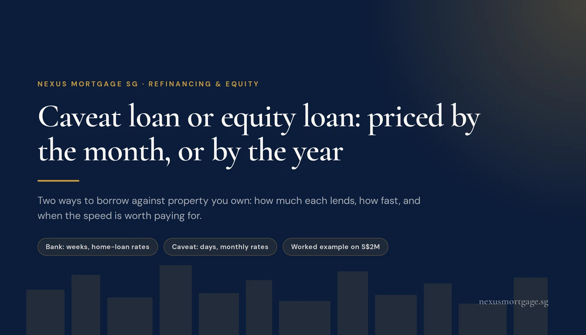
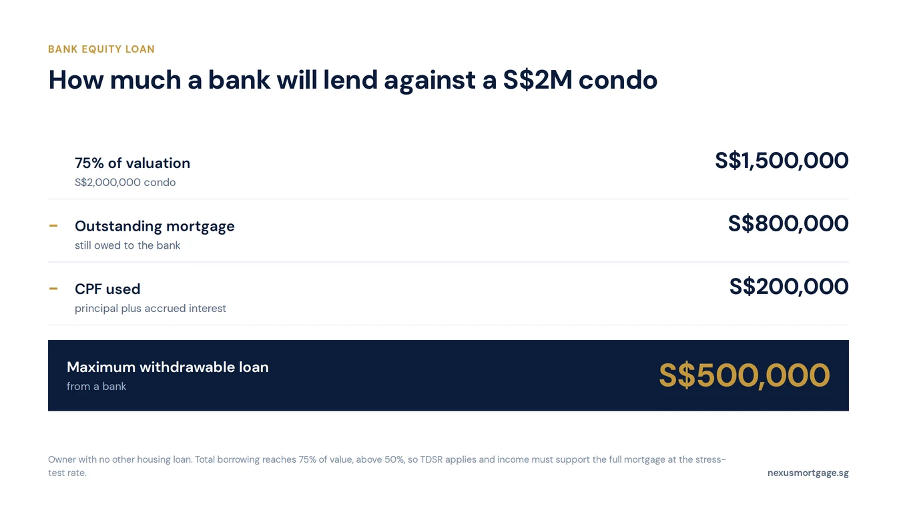
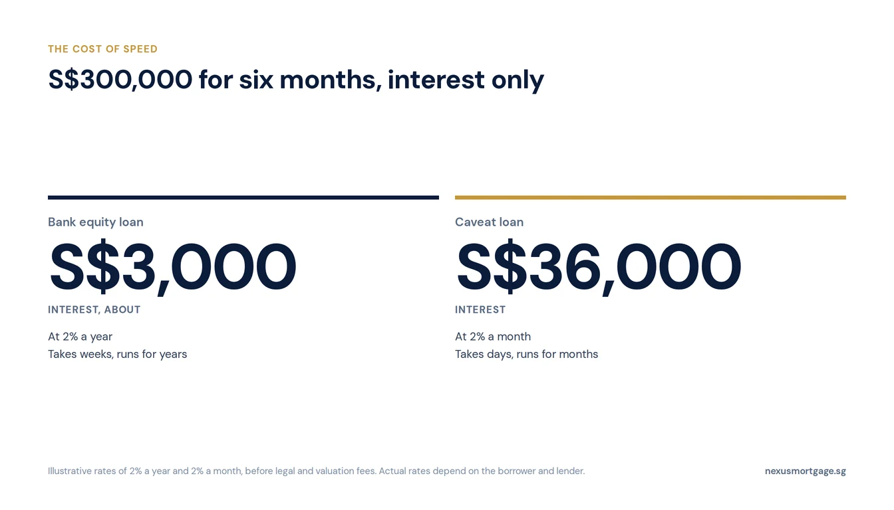

Caveat Loan vs Equity Loan: Two Ways to Borrow Against Your Property in Singapore

If you own private property, you can borrow against it in two very different ways. A bank equity loan (also called an equity term loan or cash-out refinance) is priced like a home loan, by the year, can run for years, but takes weeks and follows MAS limits: up to 75% of value, less what you owe and the CPF you used. A caveat loan from a private lender can be arranged in days, but is priced by the month and meant for a few months. As an illustration, S$300,000 for six months costs about S$3,000 at 2% a year, and S$36,000 at 2% a month. Use a caveat loan only for speed, with a clear exit.
Most of the owners who ask us about borrowing against property want the money for a business: working capital, a deposit on premises, a contract that needs funding before it pays. Last week we covered unsecured SME loans. This is the other half: using property you already own.
The Two Routes Side by Side
| Bank equity loan | Caveat loan | |
|---|---|---|
| Lender | Bank | Private lender |
| Speed | Weeks | Days |
| Priced | Per year, like a home loan | Per month, set case by case |
| Tenure | Years | Months |
| How much | Up to 75% of value, less the loan and CPF used (residential) | Set by the lender against your remaining equity |
| Income check | Full; TDSR applies above 50% of value | Light; the property and a guarantee carry it |
| Who can borrow | Individuals and companies | Mainly companies and LLPs |
| HDB flats | Not eligible | Generally not accepted |
How a Bank Equity Loan Works
A bank lends against the current value of a private property or an EC past its minimum occupation period, and the loan is priced on ordinary home loan packages, fixed or SORA-pegged. For a residential property the most you can take out is the maximum withdrawable loan:
- 75% of the current valuation, or 45% if you have another outstanding housing loan,
- less the outstanding mortgage,
- less the CPF you used to buy the property, plus accrued interest.
TDSR applies unless your total borrowing on the property stays at or below 50% of its value, so your income still has to support the instalment at the stress-test rate. Commercial and industrial property follow different rules: the MAS residential limits do not apply, CPF is not involved, and a company borrower is assessed on the business. Our cash-out refinance guide covers the residential rules in full, and our industrial property guide covers business premises.
The catch is time. Valuation, credit approval and legal work usually take weeks, which is fine for a planned need and useless for a deadline next Friday.
How a Caveat Loan Works
A caveat loan is a short-term private loan secured against a property you own. The lender lodges a caveat on the title, which stops the property being sold or refinanced without the loan being settled first. Because the bank mortgage is usually still there, the caveat lender sits behind the bank and behind the CPF used, so it lends against what is left.
- Fast. With no TDSR assessment and no MAS loan-to-value framework to work through, funds can be released within days.
- Short. Tenures run in months, built around a specific way to repay.
- Priced by the month. There is no rate card; the lender quotes on the property, the equity and the timeline.
- Guaranteed. Lenders usually ask the directors for a personal guarantee as well.
Who can lend to whom matters. A lender that lends only to companies and LLPs is an excluded moneylender and falls outside the Moneylenders Act. Lending to individuals is regulated, so an individual borrowing in their own name must go to a bank or a licensed moneylender, whose interest is capped at 4% a month. In practice, caveat loans are a business financing tool.
Worked Example: A S$2M Condo

The CPF you used comes off the top, and most owners underestimate it.
A business owner has a private condo valued at S$2,000,000, with S$800,000 still owing to the bank and S$200,000 of CPF used, including accrued interest. They have no other housing loan.
| 75% of valuation | S$1,500,000 |
| Less the outstanding mortgage | −S$800,000 |
| Less CPF used plus accrued interest | −S$200,000 |
| Maximum withdrawable from a bank | S$500,000 |
Taking the full S$500,000 brings total borrowing to 75% of the value, above the 50% line, so the bank will apply TDSR and the owner's income must support the whole mortgage at the stress-test rate. A caveat lender would look at the same S$1,000,000 of equity after the bank and CPF, apply its own cap, and decide quickly.
What the Speed Costs

A monthly rate costs about twelve times the same number charged yearly.
Rates for both depend on the borrower, so take these as illustrations. Borrowing S$300,000 for six months, paying interest only:
| Illustrative rate | Interest over six months | |
|---|---|---|
| Bank equity loan | 2% a year | about S$3,000 |
| Caveat loan | 2% a month | S$36,000 |
Both also carry legal, valuation and lodgement costs. The point is the order of magnitude: a monthly rate costs roughly twelve times the same number charged yearly. That is the price of having the money in days instead of weeks, and it is only worth paying if the alternative costs more.
“Price the bank route first, every time. A caveat loan wins on speed and nothing else, so it needs a deadline and an exit to justify it.”
When a Caveat Loan Is Worth It
- The deadline is real. A supplier payment, a deposit or a contract that cannot wait for a bank's timeline.
- The exit is already in motion. A property sale with an option exercised, a bank loan approved but not yet drawn, or a receivable due within the loan's term.
- The bank route is closed or too slow. The equity is there, but the income documents, credit record or time are not.
- The sums still work. The interest is less than what missing the deadline would cost the business.
If none of those apply, wait for the bank. If you are a company with a short, specific need and property behind it, a caveat loan can be the right tool.
Risks to Weigh
- No exit, no plan. If the repayment you were counting on falls through, a short loan at a monthly rate gets expensive fast, and the lender can pursue the guarantee and the property.
- Your existing mortgage. Some bank mortgages restrict further charges on the property. Check your letter of offer before a caveat is lodged.
- The caveat blocks you too. You cannot sell or refinance until it is settled, so build the repayment into any sale or refinance.
- The personal guarantee. It makes you personally liable for the company's loan, which a bank will also see when you next apply for a mortgage.
Not sure which route fits? WhatsApp us with the property, what you owe on it and when you need the money. We will price the bank route first.
Frequently Asked Questions
Both borrow against property you own. An equity loan comes from a bank, is priced like a home loan, runs for years and follows MAS limits. A caveat loan comes from a private lender, is arranged in days, and is priced by the month for a few months.
Up to 75% of the current valuation (45% with another housing loan outstanding), less the mortgage and the CPF used with accrued interest. On a S$2M condo with S$800,000 owing and S$200,000 of CPF used, that is S$500,000. TDSR applies above 50% of value.
It is quoted per month, case by case. At an illustrative 2% a month, S$300,000 for six months costs S$36,000 in interest, against about S$3,000 at 2% a year from a bank. Licensed moneylenders are capped at 4% a month.
Generally no. HDB flats are not eligible for bank equity loans, and caveat lenders typically accept only private residential, commercial or industrial property.
Mainly companies and LLPs, since lenders that lend only to them fall outside the Moneylenders Act. Individuals must borrow from a bank or a licensed moneylender.
When the money is needed within days, the need is short and the way to repay is already in motion. If you can wait a few weeks, a bank equity loan is far cheaper.
Further reading
- Caveat loans explained: how the caveat is lodged and who can lend
- Cash-out refinance: the full residential equity loan rules
- SME business loans: the EFS scheme and what monthly rates cost
- Equity loans on industrial property: borrowing against business premises
- TDSR and MSR: how your income caps any property loan
This article is general information on borrowing against property in Singapore. It is not financial, legal or tax advice, and not an offer of credit. Bank equity loans are subject to MAS rules and each bank's assessment. Caveat loans are private arrangements whose terms vary by lender; take legal advice before signing a facility or a personal guarantee. The worked example assumes the figures shown. The cost table uses illustrative rates of 2% a year and 2% a month, interest only, before fees; actual rates depend on the borrower and lender. Current as at November 2026. Sources: MAS Notice 632, MinLaw: Moneylenders.

About the author — Dan Ler has advised on Singapore home loans since 2017 at Nexus Mortgage SG, an independent brokerage comparing 16+ MAS-regulated lenders. Nexus has facilitated 500+ home loans across HDB, EC, private condo and landed property segments. Banks pay Nexus on disbursement, so there is no cost to the borrower.